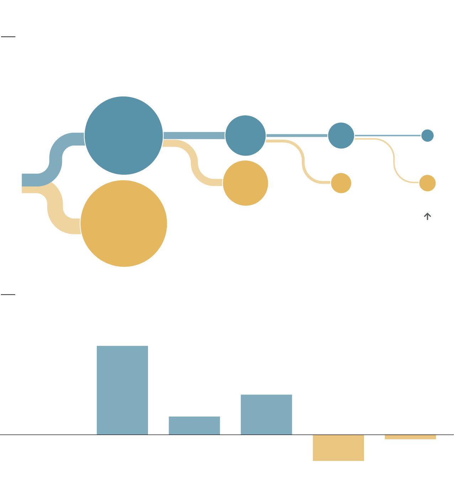

Managerial overperformance is hard to sustain
Over/underperformance in consecutive jobs
For every 100 managers*, after adjusting for players’ skill
Overperformed
first job
second
job
third
job
fourth
job
12
5
1
45
100
15
3
2
A majority of managers who
overperformed at three consecutive jobs underperformed in their next role
55
Underperformed
José Mourinho’s managerial performance
Teams’ league points per season above/below expected
+9.4
+4.2
Overperformed
+1.9
Manchester
United
Chelsea
Chelsea
Inter Milan
Real Madrid
-0.4
Underperformed
-2.8
*Tenures of at least 15 games